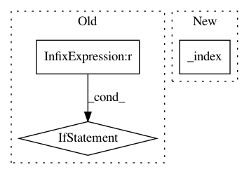

af286ba5280614ecc8371b71ed53cc6447d1183b,GPy/kern/src/static.py,Precomputed,K,#Precomputed#Any#Any#,231
Before Change
super(Precomputed, self).__init__(input_dim, covariance_matrix, variance, active_dims, name)
def K(self, X, X2=None):
if X2 is None:
return self.variance * self.fixed_K[X[:,0].astype("int")][:,X[:,0].astype("int")]
else:
return self.variance * self.fixed_K[X[:,0].astype("int")][:,X2[:,0].astype("int")]
def Kdiag(self, X):
return self.variance * self.fixed_K[X[:,0].astype("int")][:,X[:,0].astype("int")].diagonal()
def update_gradients_full(self, dL_dK, X, X2=None):
After Change
return self.fixed_K[i1,:][:,i2]
def K(self, X, X2=None):
return self.variance * self._index(X, X2)
def Kdiag(self, X):
return self.variance * self._index(X,None).diagonal()
In pattern: SUPERPATTERN
Frequency: 3
Non-data size: 3
Instances
Project Name: SheffieldML/GPy
Commit Name: af286ba5280614ecc8371b71ed53cc6447d1183b
Time: 2016-04-22
Author: ibinbei@gmail.com
File Name: GPy/kern/src/static.py
Class Name: Precomputed
Method Name: K
Project Name: tensorflow/tensorboard
Commit Name: 168a9645d9d129267f65e4468c6177ccba65e30f
Time: 2020-03-26
Author: wchargin@gmail.com
File Name: tensorboard/backend/event_processing/data_provider.py
Class Name: MultiplexerDataProvider
Method Name: list_blob_sequences
Project Name: SheffieldML/GPy
Commit Name: af286ba5280614ecc8371b71ed53cc6447d1183b
Time: 2016-04-22
Author: ibinbei@gmail.com
File Name: GPy/kern/src/static.py
Class Name: Precomputed
Method Name: update_gradients_full